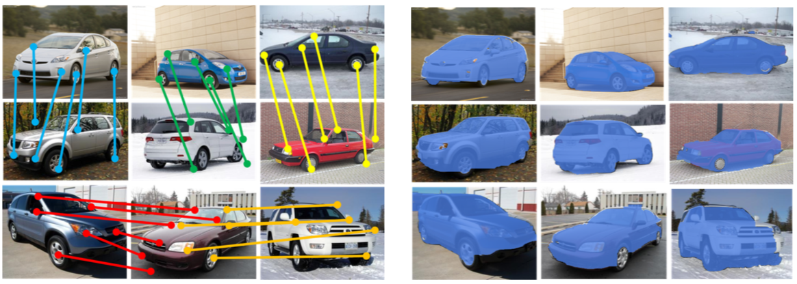
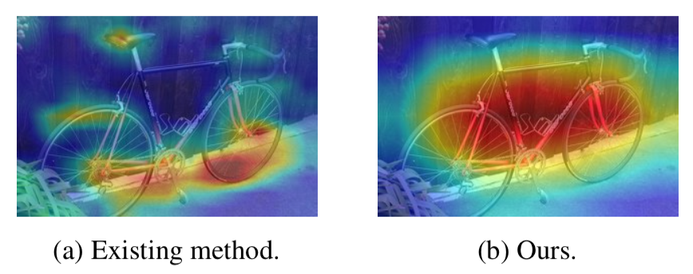
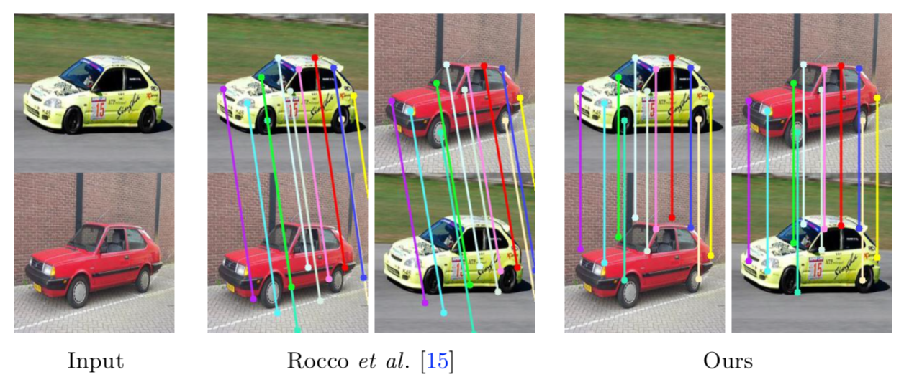
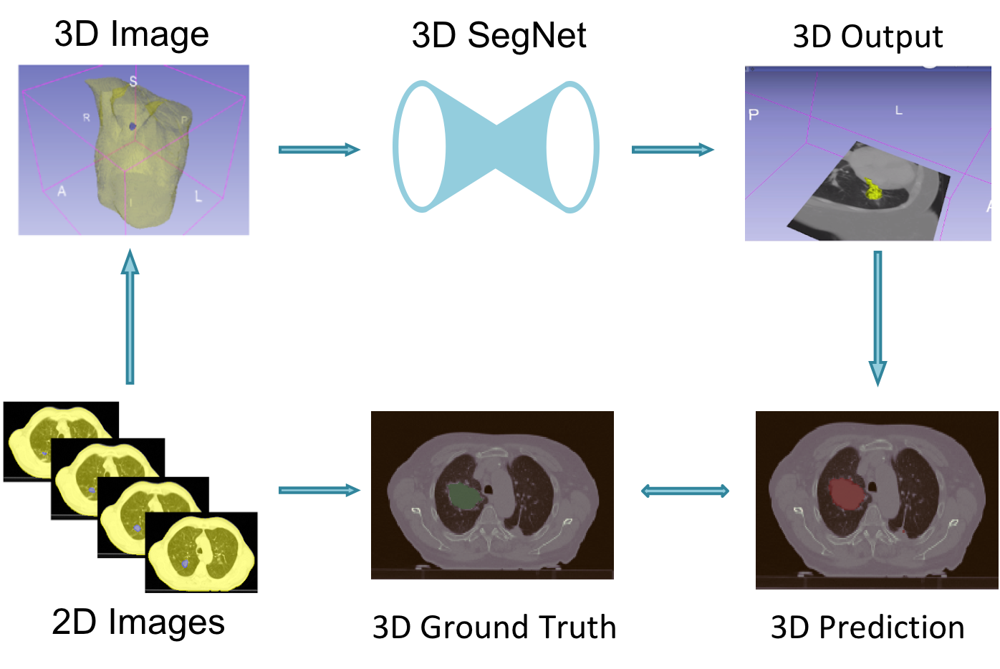
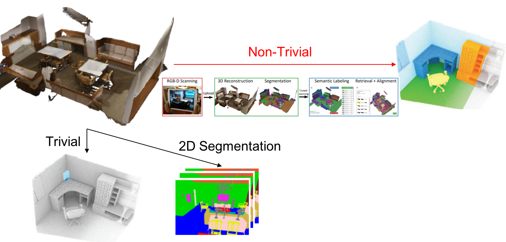

About me
I am a short-term visiting scholar in the Vision and Learning Lab at University of California, Merced under the supervision of Prof. Ming-Hsuan Yang. Previously, I am fortunate to work with Prof. Yu-Chiang Frank Wang (NTUEE), Prof. Yen-Yu Lin (Academia Sinica), Prof. Jia-Bin Huang (Virginia Tech), and Prof. Winston H. Hsu (NTUCSIE).
My research interests lie in the intersection of computer vision and deep learning. I'm particularly interested in Unsupervised Domain Adaptation, Meta-Learning, and Representation Learning.
I received my Bachelor of Science degree from the Department of Electrical Engineering at National Taiwan University in 2018.
News
- 03 / 2020: One paper on joint matching and co-segmentation accepted to PAMI.
- 03 / 2020: I am serving as a conference reviewer for NeurIPS 2020.
- 11 / 2019: I am serving as a conference reviewer for ECCV 2020.
- 09 / 2019: I am serving as a conference reviewer for CVPR 2020.
- 09 / 2019: I am serving as a program committee for AAAI 2020.
- 07 / 2019: One paper on cross-resolution generative modeling accepted to ICCV 2019.
- 03 / 2019: I am serving as a conference reviewer for ICCV 2019, BMVC 2019, and ICIP 2019.
- 02 / 2019: One paper on unsupervised domain adaptation accepted to CVPR 2019.
- 02 / 2019: One paper on weakly-supervised object localization accepted to ICASSP 2019.
- 11 / 2018: One oral paper on representation learning accepted to AAAI 2019.
- 10 / 2018: We won the Third Place in IEEE Video and Image Processing (VIP) Cup.
- 09 / 2018: Work as a full time research assistant at Academia Sinica.
- 07 / 2018: One paper on semantic matching accepted to ACCV 2018.
- 07 / 2017: Work as a part time research assistant at Academia Sinica.
Publications
2020
|  |
Show, Match and Segment: Joint Weakly Supervised Learning of Semantic Matching and Object Co-segmentation |
 |
Cross-Resolution Adversarial Dual Network for Person Re-Identification and Beyond |
2019
 |
Recover and Identify: A Generative Dual Model for Cross-Resolution Person Re-Identification |
 |
CrDoCo: Pixel-level Domain Transfer with Cross-Domain Consistency |
 |
Learning Resolution-Invariant Deep Representations for Person Re-Identification |
|  |
Saliency Aware: Weakly Supervised Object Localization |
2018
|  |
Deep Semantic Matching with Foreground Detection and Cycle Consistency |
|  |
Learning Volumetric Segmentation for Lung Tumor |
Projects
|  |
Image-based Voxel Segmentation |
 |
Cross-Domain Image-based 3D Shape Retrieval |